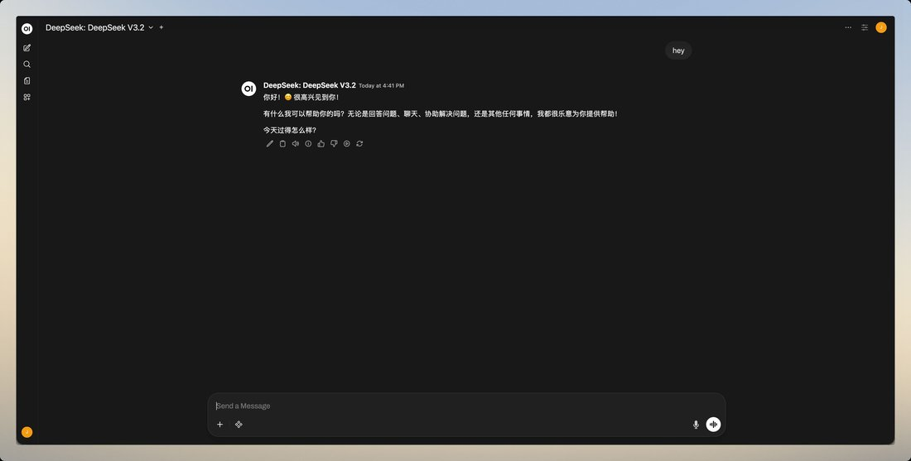

Just sent my first message to DeepSeek v3.2 and why is it replying in Chinese 😭 https://t.co/ssnZwT0LME


cited on: deepseek-v3-2
Reproduced against link rot, credited and linked to its original. Yours and you’d rather it weren’t here? Open an issue.